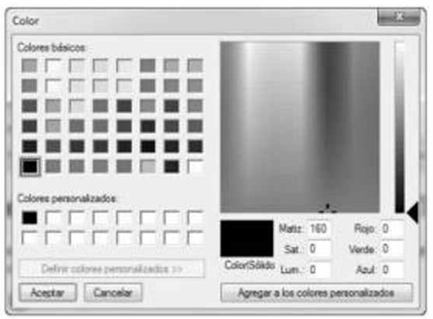

El tipo input color (figura 3.1, líneas 20 y 21) permite al usuario introducir un color. Al momento de escribir este libro, algunos navegadores despliegan el yipo input color como un campo de texto en donde el usuario puede introducir un código hexadecimal o el nombre de un color. Hay dos navegadores, Chrome y Opera, que muestran un selector de color similar al cuadro de diálogo de colores de Microsoft Windows, que se muestra en la figura 3.2. En el futuro, cuando haga clic en un elemento input color, es muy probable que muestre un selector de color también.
